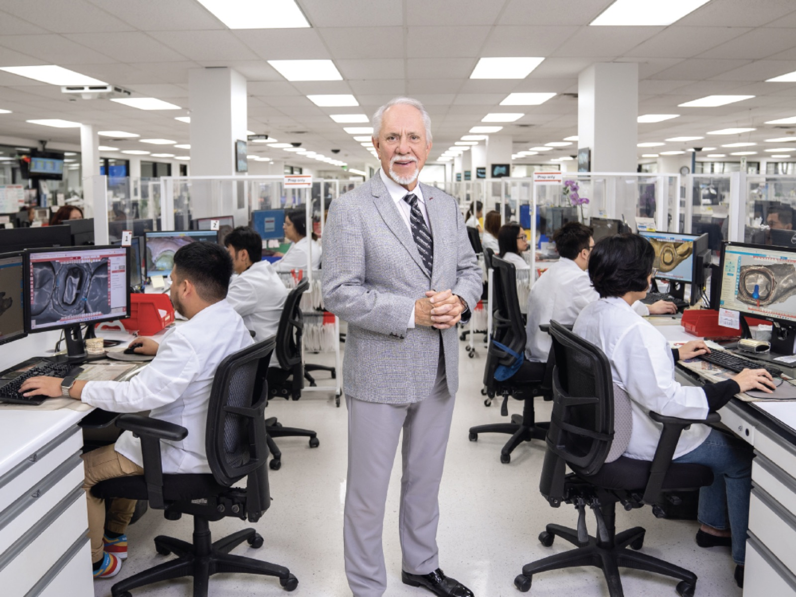
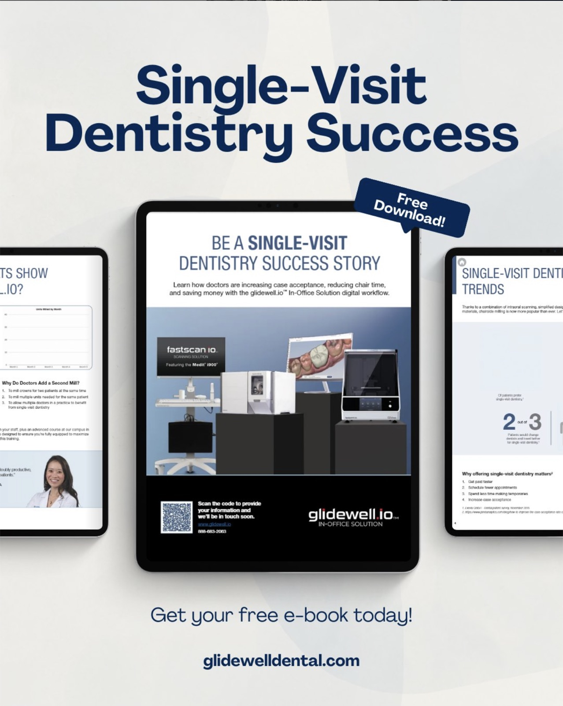
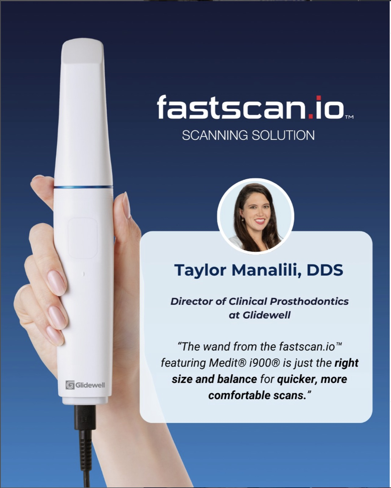
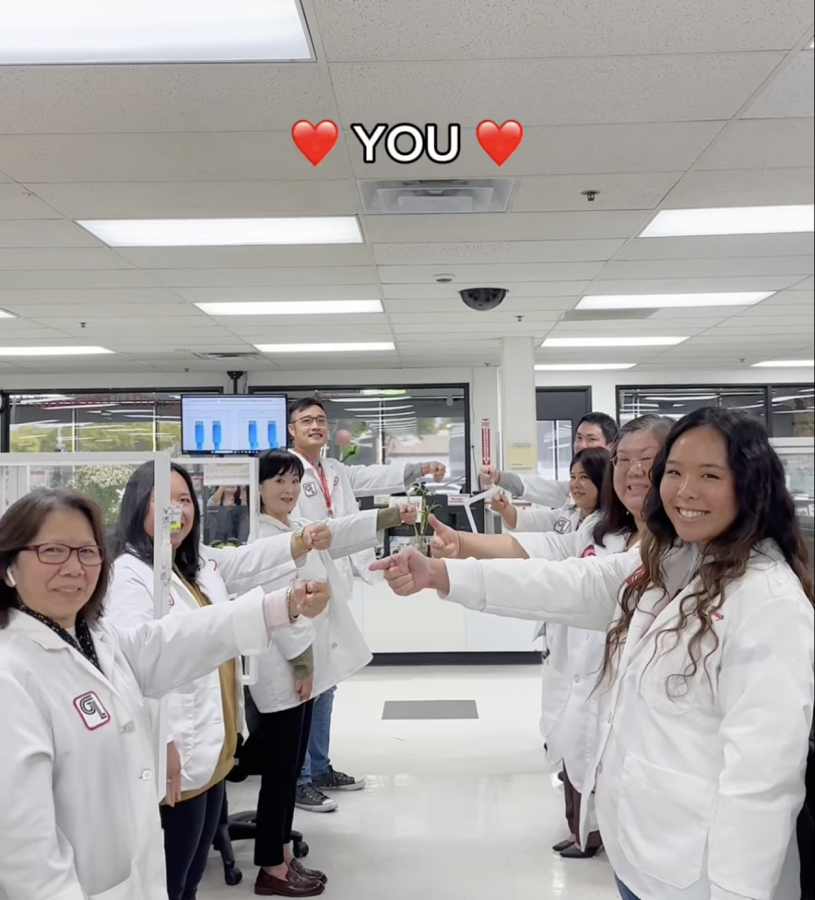
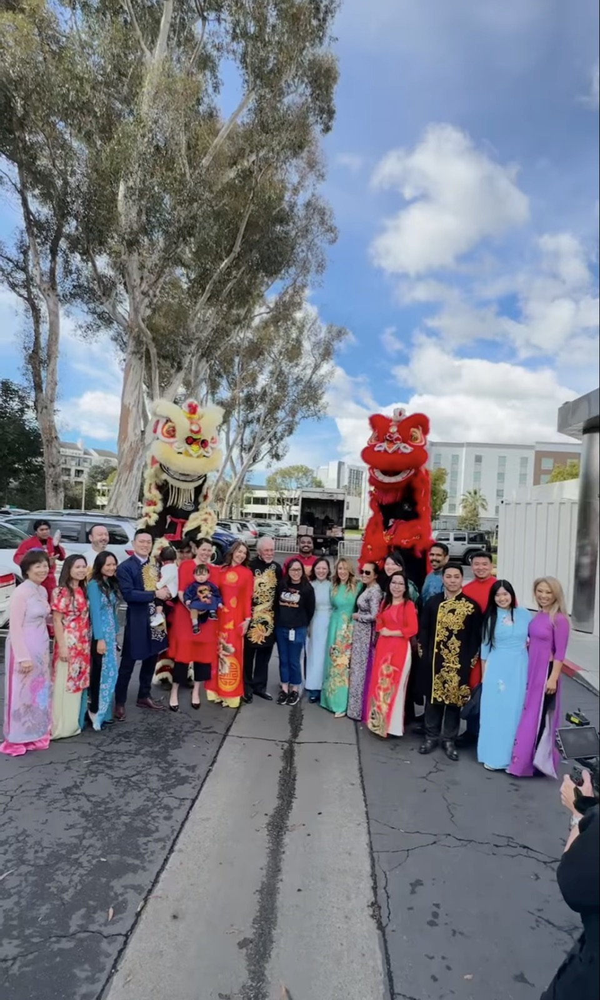
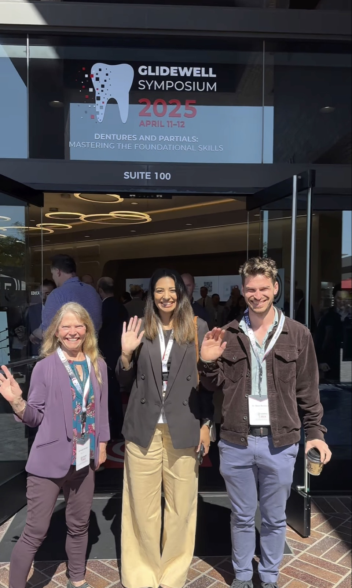

Case Study 02
Glidewell Dental
I worked across multiple social media content pillars, leveraging strategy, content brainstorming, and creation to strengthen brand presence and engagement. By aligning creative efforts with audience interests, I helped deliver a dynamic and consistent experience that fostered connection and community.
Project summary
Content that builds loyalty
I have developed and executed content across multiple strategic pillars for Glidewell, each representing a key component of the brand’s identity and contributing to long-term brand loyalty.
Event coverage is a major focus, as Glidewell regularly hosts educational and community-driven events. Capturing and sharing these moments through thoughtful content helps strengthen customer connection and reinforces the brand’s commitment to innovation, education, and community.
About the company
About Glidewell Dental
Glidewell Dental is one of the largest and most innovative dental laboratories in the world. While widely recognized for its lab products, Glidewell’s offerings extend far beyond manufacturing. The company provides cutting-edge in-office technologies, a robust catalog of online and in-person continuing education courses, and hosts the Glidewell Symposium—an industry-leading event for dental professionals.
Internally, Glidewell fosters a strong, community-driven culture through company-wide celebrations, team-building events, and employee appreciation initiatives.

Tools
- Sprinklr
- Workfront
- Microsoft Office
- Canva
- CapCut
Platforms
- X
My role
Social Media Strategist
My team and I divide responsibilities across key content pillars. I focus on glidewell.io—our digital dentistry and in-house technology solutions—holiday content, and serve as the lead for the Guiding Leaders program.
- Project management
- Manage social media accounts
- Community management and engagement
- Content strategy and content creation
- Create monthly content calendars and planning sheets
- Facilitate monthly meetings
glidewell.io
Glidewell.io is our digital in-office lab solution, offering four core products along with robust educational support through online courses, in-person training, and dedicated sessions at the Glidewell Symposium. While managing this content pillar, I focused on driving awareness and conversions through organic social media.
On average, I produced 4–5 in-feed posts per month, along with consistent story coverage, typically two or more stories monthly aligned with on-campus courses.


Holidays
Holiday content consistently performs well on Glidewell Dental’s social media platforms, often generating higher views and engagement than other post types. These posts range from trend-based videos and carousel graphics to still images and coverage from internal holiday events.
Their broader appeal extends beyond dental professionals, allowing us to connect with a wider audience. By showcasing the people behind the brand, holiday posts strengthen brand loyalty and foster a more personal connection with our community.

Events
Event content showcases key moments from Glidewell-hosted experiences, including Glidewell Symposiums, glidewell.io courses, internal celebrations, and trade shows. These posts highlight our leadership in the dental industry while fostering community and brand connection.
By capturing engaging, authentic moments, we create a sense of inclusion and generate excitement for future events.

Guiding Leaders
Guiding Leaders is the highest-performing content pillar across all platforms.
For a detailed overview of the Guiding Leaders pillar, including the campaigns I contributed to and examples of my work, see the Guiding Leaders case study →


Growth
Consistent growth across every KPI
Since joining Glidewell, I’ve helped drive consistent growth across all key performance indicators. We tracked follower count, volume of published messages, post reach, total engagements, average estimated clicks, shares, comments, and engagement rate.
Post reach declined 9.85%, which aligns with the discontinuation of paid boosting in Q3 2024 that had previously amplified visibility for the accounts. Despite that, strong gains in organic engagement and impressions highlight the effectiveness of our content strategy and the strength of our online community.
Awards
2024 Marketing Awards
Lollipop Lane Award
For positive attitude and enthusiasm
Jellybean Joy Award
Brings cheer and energy to the team
Reflection
My time at Glidewell has been a pivotal chapter in my development as a marketer.
I worked across key content pillars like glidewell.io, holidays, Guiding Leaders, and company-wide events, leading organic social campaigns that drove measurable impact, including over $180K in sales and a 10% increase in applications for Guiding Leaders. I gained experience in strategy, content creation, and community engagement while learning how to speak authentically to a niche audience.
From trend research to team collaboration, I grew confident in my ability to create meaningful, results-driven content. Most importantly, I’ve come away with a deeper understanding of how to build community through storytelling and a stronger sense of my voice as a marketer.